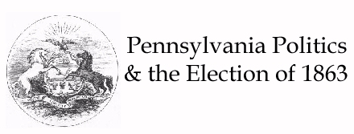

The Civil War was a pivotal era in Pennsylvania Politics. Consistently
Democratic until 1860, it would emerge from the war and its aftermath a
decidedly Republican state. Andrew Gregg
Curtin was placed in the governor's chair by the People's Party of 1860-- which was a loose agglomeration of old Whigs, new Republicans,
antiforeign Nativists, and antislavery Democrats.
Curtin (1861-1867) was the first Northern governor to publicly advocate
force to keep the South in the Union. He clashed frequently with Simeron Cameron
(Lincoln's Secretary of War), who repeatedly criticized Curtin for providing
troops with inferior supplies, weak support, and a general lack of effective
management.
Throughout the first half of 1863, Democrats exploited war weariness, and
the Democratic house drew up resolutions condemning secession,
unconstitutional acts by Congress, executive usurpation, arbitray arrests, the Emancipation Proclamation, the administration, and abolitionists; inviting the South back to allegiance; calling
for a convention to amend the constitution; and praising the boys in
blue.
The election of 1863 would fall along these lines; Justice George W. Woodward of the state Supreme Court,
a stalwart opponent of state conscription, assumed these resolutions as
the Democratic platform in his quest for the governor's office.
Curtin, who was ill and weary, wished to be removed from the race, and
perhaps replaced with General William B. Franklin, an ardent Democrat and a vigorous supporter of the war. However, county after county pledged their delegates to him, so he accpeted
the nomination ten days before the convention began. Curtin, renowned as
the soldier's friend, urged that Pennsylvania soldiers be furloughed for thirty days in time for the October election.
The election proved to be a ringing endorsement for the present adminsitration, with Curtin being elected by a large margin and the Union Party gaining control of both legislative houses.
Based on information presented in A History of
Pennsylvania